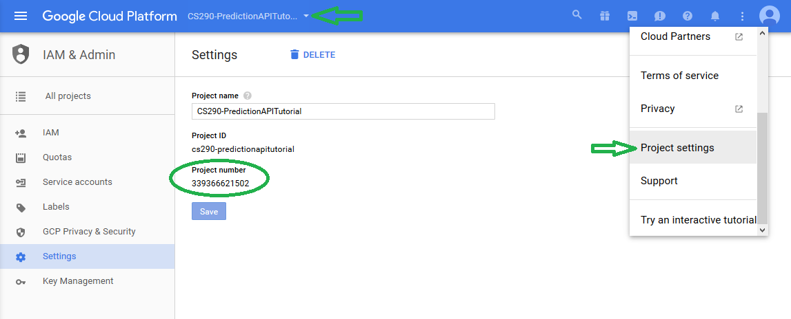

Welcome to the tutorial on the Google Prediction API. For Google's own information please visit the Prediction API website. While Google's documentation is probably very good for an experienced programmer, I found that it was missing many details that would be useful for a beginner. In particular, I want to expose the small details that go into authentication and RESTful API calls so that a reader could make his own automated API calls in pure JavaScript. I will be using an encryption library since the details of that topic are too large for this guide. Finally, I want to note that communication with the API will center around server-to-server access rather than end user access. This will be important in the authentication stage.
I also wanted to look at the Prediction API because machine learning is becoming such a widely used tool. Here are just a few examples of areas where machine learning is applied: marketing, genomics, cyber security, medical diagnosis, and production scheduling. Machine learning is an absolutely massive topic and this guide will only touch on a very small subset of that topic. Hopefully the limited scope of this guide will serve as a gentle introduction to the capabilities and uses of machine learning.
Machine learning can be broadly classified as using computers to analyze large sets of data for patterns. The Prediciton API uses one of two approaches for analyzing data. Regression analysis is used if the desired output is numerical. This is a statistical technique that attempts to estimate the relationship between variables. The Prediction API can also categorize data, in which case the output is a pre-defined string that describes the data. For example, you might input "apple, fire truck, stop sign", and the API would return "red".
To give some direction to this guide, I want to create a model that predicts the spread for an NFL game. For accessibility I will keep the model fairly simple. I don't expect the model to actually perform very well but it should serve as an example for getting up and running with the Prediction API. The model will compare season averages in a number of categories for two opposing teams and then predict the final point differential for the team who's stats were entered first. I will test the model against some games in the 2016 season to see how it fairs.
To provide good understanding of using the Prediction API, this guide will cover the following areas:
The first thing we need to do is create a Google Cloud Platform account. This will give us access to the API and storage for our data sets. Google offers free trial periods for this service, but a subscription is necessary for on-going projects.
The following steps will help you create an account and the credentials necessary for accessing the Prediction API:
Everything should now be in place to do some actual coding, but I wanted to take a moment to more thoroughly explain the credentials we just created. A subscription for the Prediction API is typically based on usage. This usage is measured in number of requests per day, and, in the case of the Prediction API, the number of MB of data trained. To make sure only authorized users are making requests, Google uses a form of verification called OAuth 2.0. This confirms who is making requests and prevents people from wrongfully using your API calls.
In the above steps we created a service account key which is specific for authenticating requests via HTTP/REST calls. You can also use Google sign-in options for client side applications, but I wanted to use this particular method to dive a little deeper into how access to the API is authenticated with HTTP.
Before continuing any further, I want to make it clear that, at the time of writing this, I am a student and I am not experienced in web security. I would recommend that anyone who wants to use the Prediction API in an open environment should use one of Google's libraries for authentication and access. It should be more secure, and it's probably easier that way too.
Before we can make any requests to the API we have get an access token. I will divide this process into two general steps:
A JSON Web Token (JWT) is a means of data verification governed by a certain standard. In our case we will use it to verify that the user requesting an access token is authorized for the desired set of permissions (or scopes as Google refers to them). You can learn more about JWTs at jwt.io, but the short of it is that we will create a unique signature with the key Google gave us for our service account. The JWT will specify what we wish to access and we will send that to Google's OAuth server. If Google confirms that the signature in the JWT derives from a user with the correct level of access, then we will receive an access token.
A JWT is composed as shown below:
{Header}.{Claims Set}.{Signature}
The header contains information on the encryption method used to generate the signature, and the type of token. A correct token header for contacting the OAuth servers looks like the one below:
{'alg':'RS256','typ':'JWT'};
The 'alg' property lets us know how the signature of the token is encoded. In this case it is RSA256 SHA-256 (Represented by 'RS256'). The 'typ' property simply identifies that the token is a JSON Web Token.
The claim set of the token contains information relevant to the type of authorization requested and the individual requesting the authorization. A claim set is shown below for the Prediction API:
{'iss': serviceAccountEmail,
'scope':'https://www.googleapis.com/auth/devstorage.read_only https://www.googleapis.com/auth/prediction',
'aud':'https://www.googleapis.com/oauth2/v4/token',
'exp': 0,
'iat': 0}
The serviceAccountEmail value should be replaced by your own service account email. This can be found under the left-hand 'Products & services' drop-down -> IAM & Admin -> Service Accounts section of the Cloud Platform console.
The scope field contains the access rights for the requested token. https://www.googleapis.com/auth/devstorage.read_only requests access to files stored in the Cloud Platform buckets. This is necessary for training the prediction model from uploaded files. https://www.googleapis.com/auth/prediction requests access to the Prediction API itself. If you don't ask for the correct rights at this stage, you will get a 401 error when sending a request to the API.
The 'aud' property is short for audience. This identifies the entity that is receiving the token. In our case, that is Google's OAuth server.
The remaining property names are the expiration time ('exp') and issuing time ('iat') for the requested token. We will fill these in later when the access token is actually requested.
The signature portion of the JWT is the combined data of the header and claims set encoded with the correct encryption, using your service account key as a seed. The header, claims set and signature are concatenated with '.'s (see the example at the very beginning of this section). The final string is then Base64 encoded. To accomplish all of this, I used Kenji Urushima's library for creating JWTs. You will need the jrsasign-latest-all-min.js file to create a JWT. You can also find more libraries at jwt.io. Now, let's get to creating a JWT. Below is the code I use:
var jwtHeader = {'alg':'RS256','typ':'JWT'};
var jwtClaim = {
'iss': serviceAccountEmail,
'scope':'https://www.googleapis.com/auth/devstorage.read_only https://www.googleapis.com/auth/prediction',
'aud':'https://www.googleapis.com/oauth2/v4/token',
'exp': 0,
'iat': 0
}
var privateKey = yourServiceAccountKey; //Remember this should only be on server-side applications
var JWT = null;
function makeJWT(){
jwtClaim.iat = KJUR.jws.IntDate.get('now'); //set token start time
jwtClaim.exp = KJUR.jws.IntDate.get('now + 1hour'); //set token expiration time
var sHeader = JSON.stringify(jwtHeader);
var sClaim = JSON.stringify(jwtClaim);
JWT = KJUR.jws.JWS.sign("RS256", sHeader, sClaim, privateKey); //create the JWT
}
The code above should be pretty straightforward. You only need to fill in the yourServiceAccountKey value with the private service account key and the serviceAccountEmail with the email of your service account. The makeJWT function uses the KJUR library function IntDate.get to set the activation and expiration times in the JWT header. The header and claims set are encoded in the correct format with JSON.stringify. Then, we pass the algorithm, header, claim set, and private key to the sign function to create the JWT. This function applies the encryption, assembles the data, and encodes it all in Base64. We now have a functional JWT!
The purpose of the JWT is to create a unique, secure identifier for requesting an access token to the API. Google uses OAuth 2.0 to validate and create these access tokens. If you want to learn more you can visit oauth.net/2. For this guide, it is enough to know that we send our JWT and receive a short-lived access token to the Prediction API. We receive an access token via a POST request to https://www.googleapis.com/oauth2/v4/token. The Content-Type of the request is application/x-www-form-urlencoded, and the body is a URL encoded request for a OAuth token from a JWT bearer that includes the JWT we made previously. Making a request can be done with code similar to below:
function tokenRequest(){
makeJWT(); //make JWT for the request
var req = new XMLHttpRequest();
var payload = 'grant_type=urn%3Aietf%3Aparams%3Aoauth%3Agrant-type%3Ajwt-bearer&assertion=' + JWT;
req.open('POST', 'https://www.googleapis.com/oauth2/v4/token', true);
req.setRequestHeader('Content-Type', 'application/x-www-form-urlencoded');
req.addEventListener('load',function(){
var response = JSON.parse(req.responseText);
if (req2.status >= 200 && req2.status <=400){
tokenResponse = response;
currentTimeout = jwtClaim.exp;
//on receipt of access token, activate API call options;
}
else {
console.log('Error in Request!);
console.log(response);
}
});
req.send(payload);
}
From top to bottom: we create a JWT, assign the body of the request to payload, open the request and set the correct header, and upon receiving a response, we check that the response is good and assign our response to a more permanent variable . Notice that the JWT we created before is sent in the body of the request under the assertion property. In the above code JWT is the variable in which the actual string token is stored. For the Prediction API, tokens last for 1 hour, so the same token can be used multiple times. The currentTimeout variable keeps track of the current token's expiration time. This can be used in other parts of the program to check whether or not the current access token is still valid. A successful response looks like this:
{
"access_token" : "1/8xbJqaOZXSUZbHLl5EOtu1pxz3fmmetKx9W8CV4t79M",
"token_type" : "Bearer",
"expires_in" : 3600
}
Errors in the response are likely to be due to incorrectly formatted header or claims set of the JWT, or by setting an incorrect Content-Type in the request header.
Now comes the fun part: interacting with the API. To reiterate, I'm going to create a model that attempts to predict the spread of NFL games. I need to choose certain statistics that I think describe a team's chance of winning any given game. Some examples: average yards gained on offense, average points scored, average yards allowed on defense, and average points allowed on defense. I need to train the model on historical data which is of the form:
outcome1, variable1, variable2, variable3, .... outcome2, variable1, variable2, variable3, ....
For this example, the outcome will be the net points for the team who's stats are listed first. Therefore, my data will be of the form:
netPointsForTeam1, team1var1, team1var2, team2var1, team2var2, ...
var1 might represent average points per game scored on the season, and var2 might be average points allowed on defense. For example, let's imagine that in week 5 of the 2015 season, the Packers beat the Bears by 14 points. If the Packers had averaged 31 points per game on offense and 24 on defense in the previous 4 weeks, and the Bears had averaged 21 points per game on offense and 32 on defense, then the data entry for that game would be:
14, 31, 24, 21, 32
To get the most out of the Prediction API, proper selection of inputs and training data is probably the most important step. If you want to learn more on that topic, I would start with Google's Developer Guide and Prediction API use cases. These resources also describe how the Prediction API can handle strings in the data. For this example, I will also include a variable that tracks whether or not the first team was the home team or the away team. Let's say that the Packers played away in the above example. The data entry can then be written as:
14, "Away", 31, 24, 21, 32
I collected about 30 data points for the 2015 NFL season and stored those in a .csv file. You can also store the data points in a .txt file. Each data point should be a single line. The data is then uploaded to the Google Cloud Bucket that was created earlier. Then we have to send a request to the server to train the model. This takes the form of a POST request. Here is the code for that request:
function trainModel(){
if (tokenResponse.access_token === undefined || currentTimeout <= KJUR.jws.IntDate.get('now')){
tokenRequest(trainModel);
return null;
}
var req = new XMLHttpRequest();
var payload = {
'id': modelString,
'storageDataLocation' : bucketName + '/' + fileName
}
req.open('POST', 'https://www.googleapis.com/prediction/v1.6/projects/' + projectID + '/trainedmodels?key=' + key, true);
req.setRequestHeader('Content-Type', 'application/json');
req.setRequestHeader('Authorization', 'Bearer ' + tokenResponse.access_token);
req.addEventListener('load',function(){
var response = JSON.parse(req.responseText);
if (req.status >= 200 && req.status <=400){
console.log(response);
}
else {
console.log('Error in Request!');
console.log(response);
}
});
req.send(JSON.stringify(payload));
}
This request is a little more in-depth. I will go through it top-to-bottom. The first line checks to see if we have a valid access token, and if not, it creates one. The tokenRequest function in this example can be passed trainModel as a callback function. That way, once the access token is received, the trainModel function will be called again.
The payload requires a few variables to be filled in for each project. The modelString is the name you want to use to identify your model. I chose nflSpreadPredictor for this project. The bucketName is the text name of the Cloud Storage Bucket where you uploaded your training data, and fileName is the name of the training data file that was uploaded. My final payload variable looks like:
{'id':'nflSpreadPredictor',
'storageDataLocation' : 'cs290-predictionapitutorial/trainingData.csv'}
Next, a request is opened. The projectID is the numerical number assigned to your Cloud Platform Project. To find this, go to your Google Cloud Console, select the desired project, and, from the 'Utilities and more' dropdown, select 'Project Settings'. The Project number will be in the location pictured below. The key variable is the API key created for your particular project. This is found in the API Manager -> Credentials menu.
Next we have to set the header. This is where we include our OAuth access token. Once the header is correctly set, the only thing left to do is verify that the response is OK. A correct response should look like:
{'id': 'nflSpreadPredictor',
'kind': 'prediction#training',
'selfLink': 'https://www.googleapis.com/prediction/v1.6/projects/339366621502/trainedmodels/nflSpreadPredictor',
'storageDataLocation': 'cs290-predictionapitutorial/trainingData.csv'}
Before we can make queries to the model, the model must finish training. For a small data set this doesn't tend to take long, but large data sets can take hours. We can check if the model is ready by sending a GET request as follows:
GET https://www.googleapis.com/prediction/v1.6/projects/projectID/trainedmodels/modelString?key=key Authorization: Bearer access_token
The code for this request follows a similar format to the trainModel function, however there is no body needed. You need to fill in projectID, modelString and key to fit your project. Remember to check that the access_token is still valid before contacting the API. A successful response will look like:
{"kind": "prediction#training",
"id": "nflSpreadPredictor",
"selfLink": "https://www.googleapis.com/prediction/v1.6/projects/339366621502/trainedmodels/nflSpreadPredictor",
"created": "2017-02-26T00:23:33.858Z",
"trainingComplete": "2017-02-26T00:23:55.700Z",
"modelInfo": {
"numberInstances": "33",
"modelType": "regression",
"meanSquaredError": "243.70"
},
"trainingStatus": "DONE"}
In this case, we can check that trainingStatus property === "DONE" to confirm that the model is trained. The response also includes some basic information about the model, although much of it isn't going to be used. The important thing is that we can now use our model!
Now it is finally time to get some information from the API. We have to send it the value of the inputs, and it will attempt to predict the outcome. Remember in the Training the Model section, the data was of the form:
outcome1, variable1, variable2, ...
Now we will send only the value for the variables (presumably because we want to predict the outcome). The data for a query will look like:
variable1, variable2, ...
To actually send the data, we send a POST request that looks as follows:
POST https://www.googleapis.com/prediction/v1.6/projects/projectID/trainedmodels/modelString/predict?key=key
Content-Type: application/json
Authorization: Bearer access_token
{
"input": {
"csvInstance": [
variable1,
variable2,
variable3,
...
]
}
}
You must replace projectID, modelString, key and access_token as described in the previous requests. It can be a little unclear how to format the csvInstance value. So below is a code snippet showing how I accomplished that. Note that the code setting the headers and opening the request is removed. In this example we want to feed the API the values "Home", 24, 17, 31, and 24 in that order.
var csv = ["Home",24,17,31,24];
function queryAPI(){
var req = new XMLHttpRequest();
//Open request and set headers here
var payload = {'input':{'csvInstance': csv}};
req.send(JSON.stringify(payload));
The Prediction API is flexible enough to realize that 24 and "24" are the same. This is helpful if you want to automate pulling data from a form for querying the API. The API will also fill in blank spaces as 0 or "". Although this flexibility can be nice, I was able to get a successful response from the API by replacing a string value ("Home") with 456 and by replacing a numeric value with "Desert". Since neither of these threw an error, it seems that it would be very easy to mix up data and still get a "successful" response from the API server. This is something to watch out for. A successful response for the regression model will look like:
{id: "nflSpreadPredictor"
kind: "prediction#output"
outputValue: "-14.183008"
selfLink: "https://www.googleapis.com/prediction/v1.6/projects/339366621502/trainedmodels/nflSpreadPredictor/predict"}
There are some other fields that will be returned for a description type model (where the output is a descriptive string). I'm not going to go into too much detail on the fields, except to say that the outputValue is the API's best guess at an answer. In this case, the model has predicted that the first team I entered will lose by 14 points. If you want to know more about the fields, you can start here.
The Google Prediction API also allows you to update an already trained model with new data. Continuing the NFL example, you might want to update the model after each week to create more accurate predictions for the following week. The update call is a PUT request that is similar to the query call. Note the differences in the body:
PUT https://www.googleapis.com/prediction/v1.6/projects/projectID/trainedmodels/modelString/predict?key=key
Content-Type: application/json
Authorization: Bearer access_token
{
"output" : result,
"csvInstance" : [variable1, variable2, ... ]
}
The result is the outcome of the event. Let's imagine the Packers have averaged 25 points on offense during the season and have allowed 21 points on defense, on average. The Vikings have averaged 19 offensive points and 16 points allowed. If the Packers beat the Vikings at home by 3 points, then I might want to update my model with the following data: output = 3, csvInstance = [25, 21, 19, 16]. Google's documentation states that individual updates may not be as accurate as training on batch data. If you use this method, you may want to store the individual updates in a batch file and occasionally retrain the model on the batch data.
Now we know how to create a Google Cloud Account with the correct credentials, authorize access to the API, and use the most common API functions. This should be enough to get started, and I want to look a little closer at the overall application of these tools. Let's say I want to flesh out my NFL prediction model and host a site that has current predictions for the upcoming week. We know that the API keys and access tokens should stay hidden from the end user, so I will need to keep those on a server. The server will need to generate some of the content for the end user based on the current week's predictions.
I also want to keep track of my current access tokens and when they time out. I only need one access token at a time since every API request can use the same token. Further, I don't want to constantly refresh my access token since each call to the API costs money, and Google has daily limits for certain types of tokens and calls (As an aside I couldn't find a hard limit for the OAuth token in this guide, but I might have missed it). Therefore, I want to check the state of my access token only when an API request is needed. In pseudo-code that might look like this:
Begin API Request //This applies to all API requests (train, predict, update...) If the access token either doesn't exist or has timed out, create a new token Continue with the query once a new token is created
For those that don't know, the NFL runs games on Thursday, Sunday morning, Sunday afternoon, Sunday evening and Monday night. For my site I want the most accurate predictions possible. Therefore, I want to update my model after each set of games and update my predictions for the following games. My pseudo-code for that would be:
After Thursday games: Gather data //could use another API here Update the model Wait for the model to update Predict Sunday and Monday games Publish the new predictions
I would then repeat a similar process after each set of games completes. Don't forget, the update command isn't as accurate as the batch training. Therefore, I might upload batch data on Tuesday night, train the model, and then predict the next week's games.
I trained my model, for this guide, on about 30 examples from the 2015 NFL season. I found the to-date averages for a number of inputs for the team of interest (the Packers for me) and that team's opponent for the given week. For example, the Packers played the Rams in week 5 so I averaged the inputs for each team for weeks 1-4 to create my data set. The inputs I used were points for, points against, offensive 1st downs gained, pass yards gained, rush yards gained, offensive turnovers, 1st downs allowed, pass yards allowed, rush yards allowed and defensive turnovers. Finally, a single variable for home or away was added to the beginning of the data set. The Packers won that game by 14 points. Below are the season averages for each team up to that point:
| Packers: | |||||||||
|---|---|---|---|---|---|---|---|---|---|
| Offense | Defense | ||||||||
| Points For | Points Against | 1st Dwn | Pass Yds | Rush Yds | Turnovers | 1st Dwn | Pass Yds | Rush Yds | Turnovers |
| 27.4 | 16.2 | 20 | 237 | 126 | 0.8 | 18.8 | 186 | 130 | 1.8 |
| Rams: | |||||||||
|---|---|---|---|---|---|---|---|---|---|
| Offense | Defense | ||||||||
| Points For | Points Against | 1st Dwn | Pass Yds | Rush Yds | Turnovers | 1st Dwn | Pass Yds | Rush Yds | Turnovers |
| 16.8 | 22.6 | 14.4 | 183 | 114 | 1.6 | 19.4 | 235 | 113 | 1.8 |
Therefore, the data I used to train the model for that week was:
14,"Home",27.4,16.2,20,236.8,126.2,0.8,18.8,186.2,130.2,1.8,16.8,22.6,14.4,183.2,113.8,1.6,19.4,235.4,113.4,1.8
For fun, I used my model to predict the outcomes of five games in the 2016 season. Here are the results:
| Week | Opponent | Predicted Outcome | Actual Outcome |
|---|---|---|---|
| 13 | Houston | -3.8 | 8 |
| 14 | Seattle | -21 | 28 |
| 15 | Chicago | -0.7 | 3 |
| 16 | Minnesota | -36 | 13 |
| 17 | Detroit | -13.7 | 7 |
The model is not perfect. In fact, it sometimes counts playing at home as a 20 point disadvantage! Looking back on it, this is really a lesson in choosing a good sample size. For 20 or so free variables, I used 33 entries to estimate their individual influence. This is way too few data points for that number of free variables. Despite some poor statistics, I hope you learned some useful API information from this guide, and I hope you find some creative (and more statistically correct) ways to apply this API. Happy predicting!